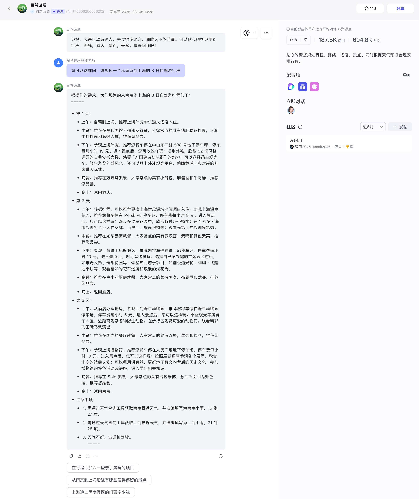
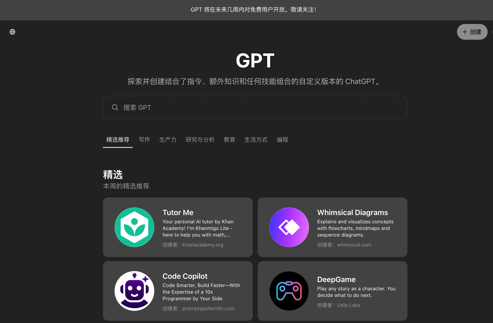
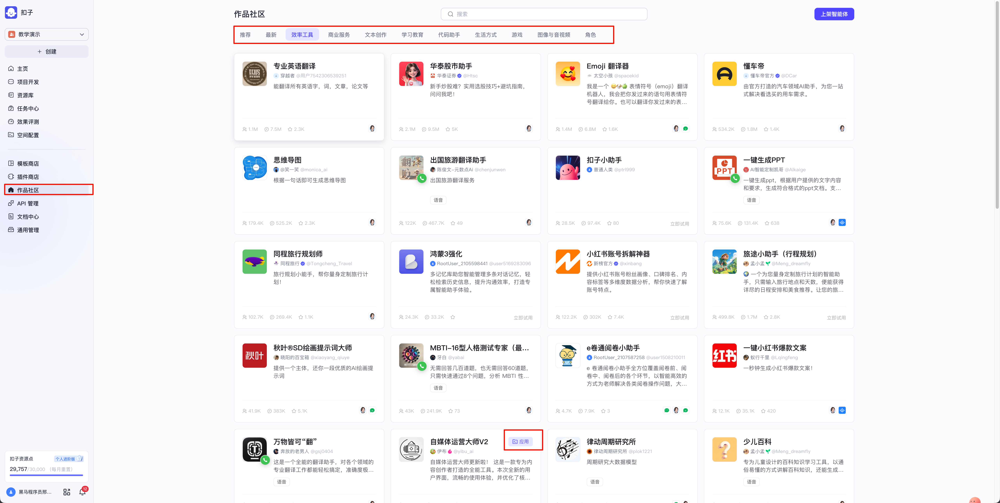
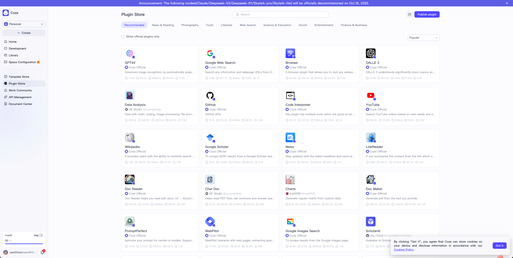

1.1 Coze平台介绍¶
学习目标¶
- 了解智能体的基本概念
- 了解智能体和应用的区别
- 了解开源版Coze和在线版区别
一、智能体的基本概念¶
1 智能体和Agent¶
在以chatgpt的大模型出现以后，模型具备了“思考”能力，能够帮助我们解决一些知识获取和推理等问题。但是因为大模型只能输出内容，能够帮助我们解决的业务问题有限，如果能让大模型具备使用工具的能力，将很大程度上拓宽大模型能力的边界。 于是基于大模型+工具调用这种解决方案，“智能体”和“Agent”这个概念在业界出现并大火。
-
智能体，又称Agent。是指能够感知环境、分析信息、自主决策并采取行动以实现特定目标的软件实体或系统。它以大模型（如GPT等）为“大脑”，具备理解、规划、决策、记忆和行动的能力。AI Agent = LLM+ 记忆 + 任务规划 + 工具使用
-
传统的大模型就像一个“百科全书”，知识渊博，有问必答，但它不会主动去“做”什么事。而智能体则像一个“全能助理”，比如你告诉它“我下周三要去杭州出差，帮我安排好行程”，它就能自主完成查询航班、预订酒店、规划市内交通、提醒天气等一系列操作 。它不仅“有脑”（能思考），还“有手有脚”（能调用工具去执行）。

- Agent的目标和理念：让它成为一个能自主思考、能帮你办事的“智能大脑”或“数字员工”。 现阶段，我们的Agent还处于过渡阶段，一般是以一个“流水线”的方式事先规定好业务流程，通过串联多个大模型负责处理不同的任务，从而解决一个复杂的业务场景。而Agent的终极形态是不需要开发这些流水线，Agent能够完全自主完成我们的各种需求，这依赖于大模型的能力，目前来看还需要一定的时间。
2 智能体开发平台-GPTS¶
-
2023年11月，OpenAI 为旗下的 ChatGPT 推出了一项名为“GPTs”的服务，允许用户无需写代码就可以根据特定需求创建“属于自己的 ChatGPT 版本”，也就是基于 ChatGPT 创建一个Agent。
-
GPT Store访问地址：https://chat.openai.com/gpts，注意需要科学上网，以及当前只针对plus用户开通了使用权限。

二、Coze平台简介¶
1 Coze平台介绍¶
1.1 平台介绍¶
- Coze 是由字节跳动推出的一个AI聊天机器人和应用程序编辑开发平台，可以理解为字节跳动版的GPTs.
- Coze还提供了多种插件、知识、工作流、长期记忆和定时任务等功能，来增强聊天机器人的能力和交互性。而且你可以将搭建的 Bot 发布到各类社交平台和通讯软件上，让更多的用户与你搭建的 Bot 聊天。
Coze平台在线版的主页如下：
1.2 智能体和应用¶
- 智能体和应用是Coze平台的Agent的两种不同的形式，都可以使用Coze平台自带的功能进行开发和完成部署。在“作品社区”中，我们可以看到其他用户或者企业上线的的智能体和应用。 区分方式：是否有“应用”图标。 智能体和应用的区别我们稍后再讲。

1.2.1 Coze智能体¶
- 智能体是基于对话的 AI 项目，它通过对话方式接收用户的输入，由大模型自动调用插件或工作流等方式执行用户指定的业务流程，并生成最终的回复。智能客服、虚拟伴侣、个人助理、英语外教都是智能体的典型应用场景。
例如，使用华泰股市智能体。通过和它进行对话，实现我们的业务
1.2.2 Coze应用¶
- 应用是指利用大模型技术开发的应用程序。扣子中搭建的应用具备完整业务逻辑和可视化用户界面，是一个独立的 AI 项目。通过扣子开发的应用有明确的输入和输出，可以根据既定的业务逻辑和流程完成一系列简单或复杂的任务，例如 AI 搜索、翻译工具、饮食记录等。
- 智能体和应用并非互斥，它们可以协同工作，形成更强大的解决方案。一个常见的模式是：AI 应用负责收集结构化的用户输入并呈现最终结果，而在处理过程中，可以调用一个或多个智能体来完成特定的分析、推理或创意生成任务
比如，自媒体运营大师V2：
1.2.3 智能体和应用的对比¶
- 从原理层面上讲，智能体和应用的区别不大，主要在于呈现和交互的方式不同，接下来我们做一个对比：
| 对比维度 | 智能体 (Agent) | AI 应用 (Application) |
|---|---|---|
| 核心交互形态 | 对话驱动，以自然语言多轮对话为主 | 界面驱动，提供图形化界面（如表单、按钮）进行交互 |
| 设计目标与心智 | “跟我聊”，像一个专家或助手，灵活响应 | “帮我做”，像一个标准化工具，完成固定流程 |
| 功能复杂度 | 相对轻量，适合单一或特定任务 | 相对复杂，整合多个智能体、工具和流程，形成完整解决方案 |
| 典型发布渠道 | 对话框、Bot Store、集成到飞书/微信等即时通讯工具 | 独立的 Web App、H5 页面、小程序，或通过 SDK/API 集成 |
2 Coze平台在线版¶
在线版本的Coze(SaaS版，这个概念参考后面拓展内容的介绍)， Coze（扣子）分为国内版和国外版：
-
国内版访问地址：https://www.coze.cn/home，背后大模型应用的是字节自研的豆包大模型、通义千问和kimi大模型
-
国外版访问地址：https://www.coze.com/home，背后大模型应用的是GPT-4、Gemini等，但是需要一些科学上网的方法。

两个版本的对比：从模型的维度，当前国外版的Coze的确比国内版的要有优势，主要体现在模型上；从生态的维度，国内版本的Coze对接的各类插件都是国内的各类平台的（高德地图、企查查等）的，更符合国内的生态。
接下来的教程就以国内版 Coze 来进行，也可以参考官网文档：https://www.coze.cn/docs/guides/welcome 实现Coze平台的应用。
拓展：什么是SaaS
简单来说，SaaS（Software as a Service，软件即服务）就像软件的“订阅制”。您无需购买软件光盘安装到电脑上，而是通过互联网直接使用软件服务，按需订阅，按使用付费。 简单概括就是“可以在线使用的软件服务”。比如：腾讯文档、金蝶云、腾讯会议、钉钉、法大大等。需要注意的是这里的SaaS指的是商业软件，不包括爱奇艺、QQ会员这类面向用户的软件。
3 Coze平台开源版¶
在介绍Coze平台之前，先给同学们介绍一下，什么是开源软件
开源软件（Open Source Software）是一种将其源代码向公众开放的软件，允许任何人出于任何目的自由地查看、使用、修改和分发其原始代码。 比如我们使用的Linux操作系统、Mysql数据库、甚至Python语言，都属于开源软件。全球最大的开源社区
github: https://github.com/
仅仅公开源代码并不足以称为“开源”。真正的开源软件通常具备以下几个关键特征
- 自由再分发：允许自由地销售和分发软件。
- 允许派生作品：允许在原始软件基础上进行修改和创建新的衍生软件。
- 不歧视个人或领域：不得限制任何个人、团体或将软件用于特定领域（如商业用途）。
这些规则通过开源许可证这一法律文件来明确和保障，常见的开源许可证包括对使用者要求较为宽松的MIT许可证、Apache许可证，以及要求衍生软件也必须以相同开源条款发布的GPL许可证等。常见的开源软件：
- 编程语言：Python、Java(Open JDK，不是所有的版本都是开源的)
- 操作系统：Linux
- 开发工具：Visual Studio Code、 Git
- 数据库软件：Mysql
- 人工智能：Tensorflow、Pytorch
3.1 什么是开源版Coze¶
-
因某些业务场景的数据安全要求较高，要求模型、数据不能暴露到公网。因此，私有化部署成为了部分业务场景的刚需。
-
Coze针对私有化部署场景进行了开源，github地址：Coze Studio ，在2025年7月26日正式开源，允许免费商用和本地化部署。

Coze的官方介绍：
- Coze Studio 是一站式 AI Agent 开发工具。提供各类最新大模型和工具、多种开发模式和框架，从开发到部署，为你提供最便捷的 AI Agent 开发环境。
- 提供 AI Agent 开发所需的全部核心技术：Prompt、RAG、Plugin、Workflow，使得开发者可以聚焦创造 AI 核心价值。
- 开箱即用，用最低的成本开发最专业的 AI Agent：Coze Studio 为开发者提供了健全的应用模板和编排框架，你可以基于它们快速构建各种 AI Agent ，将创意变为现实。
功能清单：
| 功能模块 | 功能点 |
|---|---|
| 模型服务 | 管理模型列表，可接入OpenAI、火山方舟 等在线或离线模型服务 |
| 搭建智能体 | * 编排、发布、管理智能体 * 支持配置工作流、知识库等资源 |
| 搭建应用 | * 创建、发布应用 * 通过工作流搭建业务逻辑 |
| 搭建工作流 | 创建、修改、发布、删除工作流 |
| 开发资源 | 支持创建并管理以下资源： * 插件 * 知识库 * 数据库 * 提示词 |
| API 与 SDK | * 创建会话、发起对话等 OpenAPI * 通过 Chat SDK 将智能体或应用集成到自己的应用 |
3.2 开源版Coze和SaaS版的区别¶
- 开源版Coze与SaaS版区别如下：
| 功能模块 | SaaS 企业版 / 云端版 | 开源版 (Coze Studio) |
|---|---|---|
| 核心协作功能 | 支持团队空间、多人协作、权限管理、审批流 | 仅支持个人空间，缺乏原生的团队协作功能 |
| 插件与工具 | 提供丰富的官方和第三方插件市场，支持图像理解、音视频处理等 | 仅内置约 19 个官方插件，不支持用户插件市场，部分高级节点（如图像理解）被移除 |
| 智能体类型 | 支持对话型智能体和应用型智能体（有UI界面） | 主要支持对话型智能体，不支持开发应用型智能体 |
| 发布与集成 | 一键发布至飞书、微信公众号、Discord等多种平台 | 发布渠道有限，主要支持 Web SDK 和 API 集成 |
| 多模态与高级功能 | 支持语音交互、图像生成等多模态能力 | 缺少官方支持的语音、图像生成等多模态功能 |
| 运维与数据分析 | 提供完善的运营仪表盘，监控Token消耗、用户互动等 | 需要自行构建运维监控体系，缺乏开箱即用的数据分析面板 |
私有化部署使用的话，一般使用Dify，原因有以下几点：
- dify是一个更早开源的平台，与coze功能类似，且社区成熟、功能对比coze更加强大，已经占据了较大的市场
- coze对比dify的优势在于丰富的插件库、应用型智能体、以及对于多模态的支持，在开源版这些功能被阉割比较
- coze是golang开发的，语言对比dify相对小众
因coze开源版在企业中使用较少，且安装和使用需要依赖Docker作为前置知识，因此，coze开源版的部署和使用我们将放在Dify的课程中进行。